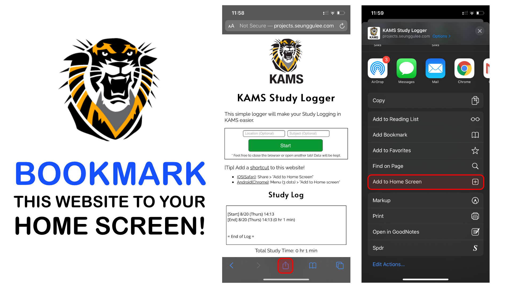

KAMS Study Logger
Record your study hours with just a click.
This simple logger will make your Study Logging in KAMS easier.
Record your study hours with just a click.
This simple logger will make your Study Logging in KAMS easier.
Log will show up here
New! Export your study log to PDF with a single click. Press "Save as PDF" or "Print" to try it out.
Accidentally pressed "Suppress Dialogs"? No worries, just close and reopen the website.
No data is sent to our servers. Your study log will be locally stored on your device. The data will NOT be deleted when you close your browser. However, deleting your browser cache or cookies may delete your data.
Developed by Seung-Gu Lee (admin@seunggulee.dev)
This website is not affliated with Kansas Academy of Math and Science (KAMS) or Fort Hays State University (FHSU). This is a student-made website.
DISCLAIMER: Although this website is not intentionally designed to delete user data (unless requested by user), the data may be lost due to technical reasons. We highly recommend you that you keep a copy of your data. The developer does not take any responsibility for any losses in data.